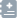

| 患者号：{{patientInfo.patientId}} | 姓名：{{patientInfo.name}} | 年龄：{{patientInfo.age}} | 性别：{{patientInfo.sex}} | 身高：{{patientInfo.height}} |
| 体重：{{patientInfo.weight}} | 体表面积： {{patientInfo.bsa}} | 是否怀孕： {{patientInfo.isPregnant == '0' ? '否' : (patientInfo.isPregnant == '1' ? '是' : '')}} | 孕期： {{patientInfo.pregWeeks}} | 是否哺乳： {{patientInfo.isLactation == '0' ? '否' : (patientInfo.isPregnant == '1' ? '是' : '')}} |
过敏药品列表：
{{onAllergyDrug.join(',')}}
查看
 查看电子病历
查看检验/检查单
 查看手术
查看手术
处方号：{{optRecipe.recipeDetails.recipeNo}}
(退药处方)
| {{optRecipe.recipeDetails.recipeTime|date:"yyyy-MM-dd HH:mm:ss"}} | 科室：{{optRecipe.recipeDetails.deptName}} | 医生：{{optRecipe.recipeDetails.recipeDocName}} | 医生职称：{{optRecipe.recipeDetails.recipeDocTitle}} | 诊断：{{optRecipe.recipeDetails.diagnoseName}} | 单贴金额：{{optRecipe.recipeDetails.herbUnitPrice}} | 贴数：{{optRecipe.recipeDetails.herbPacketCount}} |
| 组号 | 药品名称 | 规格 | 厂家 | {{optRecipe.recipeDetails.recipeType == '草药方'?'单贴剂量':'给药剂量'}} | 给药途径 | 给药频率 | 数量 | 给药时机 | {{optRecipe.recipeDetails.recipeType == '草药方'?'煎法':'备注'}} | 重点关注 |
|---|---|---|---|---|---|---|---|---|---|---|
| {{recipeDrug.groupNo}} | {{recipeDrug.drugName}} | {{recipeDrug.specification}} | {{recipeDrug.manufacturerName}} | {{recipeDrug.drugDose}} | {{recipeDrug.drugAdminrouteName}} | {{recipeDrug.drugUsingFreq}} | {{recipeDrug.despensingNum}}{{recipeDrug.packUnit}} | {{recipeDrug.drugUsingTimePoint}} | {{recipeDrug.specialPrompt}} |
处方号 : {{curRecipeNo}} 警示信息
药师{{result.auditDoctorName}}打回了处方
{{result.auditTime | date: 'yyyy-MM-dd HH:mm'}}
药师{{result.auditDoctorName}}通过了处方
{{result.auditTime | date: 'yyyy-MM-dd HH:mm'}}
药师{{result.auditDoctorName}}超时通过了处方
{{result.auditTime | date: 'yyyy-MM-dd HH:mm'}}
系统自动通过了处方
{{result.auditTime | date: 'yyyy-MM-dd HH:mm'}}
医生{{result.auditDoctorName}}处理了处方（{{resultisDoubledSign == 1 ? '双签名确认' : '忽略'}}）
{{result.auditTime | date: 'yyyy-MM-dd HH:mm'}}
评审意见：{{result.auditResult}}
回复：{{result.auditResult}}
{{record.drugName}}
{{message.message}}
{{message.severity}}
{{opt.operateType==1?'药师':'医生'}}{{opt.operatePeopleName}}勾选该条警示信息将处方打回，要求医生修改或双签名确认
{{opt.operateType==1?'药师':'医生'}}{{opt.operatePeopleName}}勾选该条警示信息将处方打回
{{!opt.operateType?'药师':'医生'}}{{opt.operatePeopleName}}忽略该条警示信息
{{opt.operateType==1?'药师':'医生'}}{{opt.operatePeopleName}}双签名确认
{{opt.operateType==1?'药师':'医生'}}{{opt.operatePeopleName}}回复：{{opt.operateMessage}}
x
过敏信息
| 过敏药物 | 过敏反应 | ||||||||||||||||||||||||||||||||||||||||||||||||||||||||||||||||||||||||||||||||||||||||||||||||||
|---|---|---|---|---|---|---|---|---|---|---|---|---|---|---|---|---|---|---|---|---|---|---|---|---|---|---|---|---|---|---|---|---|---|---|---|---|---|---|---|---|---|---|---|---|---|---|---|---|---|---|---|---|---|---|---|---|---|---|---|---|---|---|---|---|---|---|---|---|---|---|---|---|---|---|---|---|---|---|---|---|---|---|---|---|---|---|---|---|---|---|---|---|---|---|---|---|---|---|---|
| {{allergy.allergyDrug}} | {{allergy.anaphylaxis}} | ||||||||||||||||||||||||||||||||||||||||||||||||||||||||||||||||||||||||||||||||||||||||||||||||||
| 暂无过敏信息 | |||||||||||||||||||||||||||||||||||||||||||||||||||||||||||||||||||||||||||||||||||||||||||||||||||
重点关注
ｘ
暂无关联点信息！
手术
- 患者号 {{operation.patientId}}
- 患者姓名 {{patientInfo.name}}
| 手术名称 | 切口类型 | 手术开始时间 | 手术结束时间 |
|---|---|---|---|
| {{operation.operationName}} | {{operation.operationIncisionType}} | {{operation.operationStartTime | date:"yyyy-MM-dd HH:mm:ss"}} | {{operation.operationEndTime | date:"yyyy-MM-dd HH:mm:ss"}} |
实验室指标
| No. | 检验指标 | 结果 | 单位 | 参考范围 |
|---|---|---|---|---|
| {{i + 1}} | {{indicator.indicatorName}} | {{indicator.examResult}} | {{indicator.examResultUnit}} | {{indicator.lowerLimit}}-{{indicator.upperLimit}} |
影像检查
| 患者号 {{patientInfo.patientId}} | 患者姓名 {{patientInfo.name}} | 性别 {{patientInfo.sexStr}} | 年龄 {{patientInfo.ageStr}} |
| 科室 {{imageItme.applicantDeptName}} | 送检医生 {{imageItme.applicantName}} | 检查项目 {{imageItme.imageName}} | 样本部位 {{imageItme.performSite}} |
| 体位 {{imageItme.performSite}} | 报告时间 {{imageItme.reportTime | date:"yyyy-MM-dd HH:mm:ss"}} |
内容：
{{imageItme.imagingPosition}}
{{imageItme.imagingDiagnosis}}
特殊检查
{{specialExamItem.examItemName}}
| 患者号 {{patientInfo.patientId}} | 患者姓名 {{patientInfo.name}} | 性别 {{patientInfo.sexStr}} | 年龄 {{patientInfo.ageStr}} |
| 科室 {{specialExamItem.applicantDeptName}} | 送检医生 {{specialExamItem.applicantName}} | 检查项目 {{specialExamItem.examItemName}} | |
| 报告时间 {{specialExamItem.reportTime | date:"yyyy-MM-dd HH:mm:ss"}} |
内容：
{{specialExamItem.examConclusion}}
病理检查
{{pathologicalExam.examItemName}}
| 患者号 {{patientInfo.patientId}} | 患者姓名 {{patientInfo.name}} | 性别 {{patientInfo.sexStr}} | 年龄 {{patientInfo.ageStr}} |
| 科室 {{pathologicalExam.applicantDeptName}} | 送检医生 {{pathologicalExam.applicantName}} | 标本名称 {{pathologicalExam.sampleName}} | |
| 送检时间 {{pathologicalExam.performTime | date:"yyyy-MM-dd HH:mm:ss"}} | 报告时间 {{pathologicalExam.reportTime | date:"yyyy-MM-dd HH:mm:ss"}} |
内容：
{{pathologicalExam.pathologicDiagnosis}}